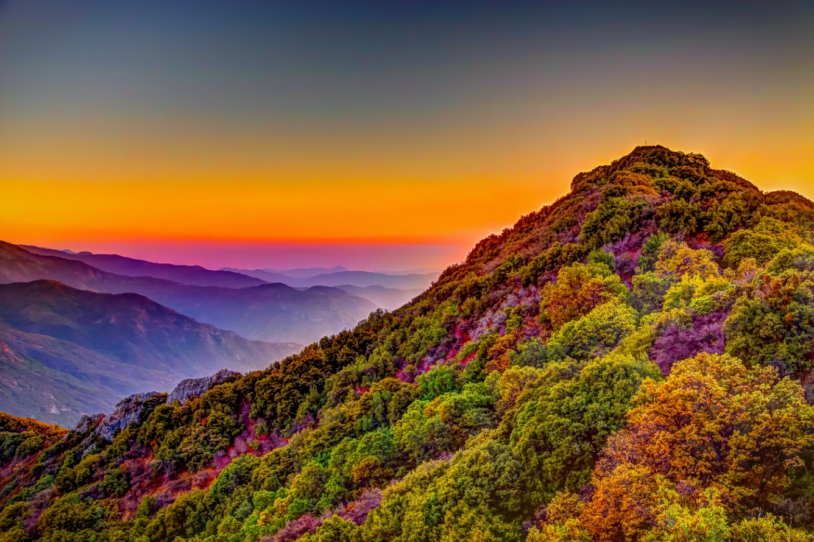
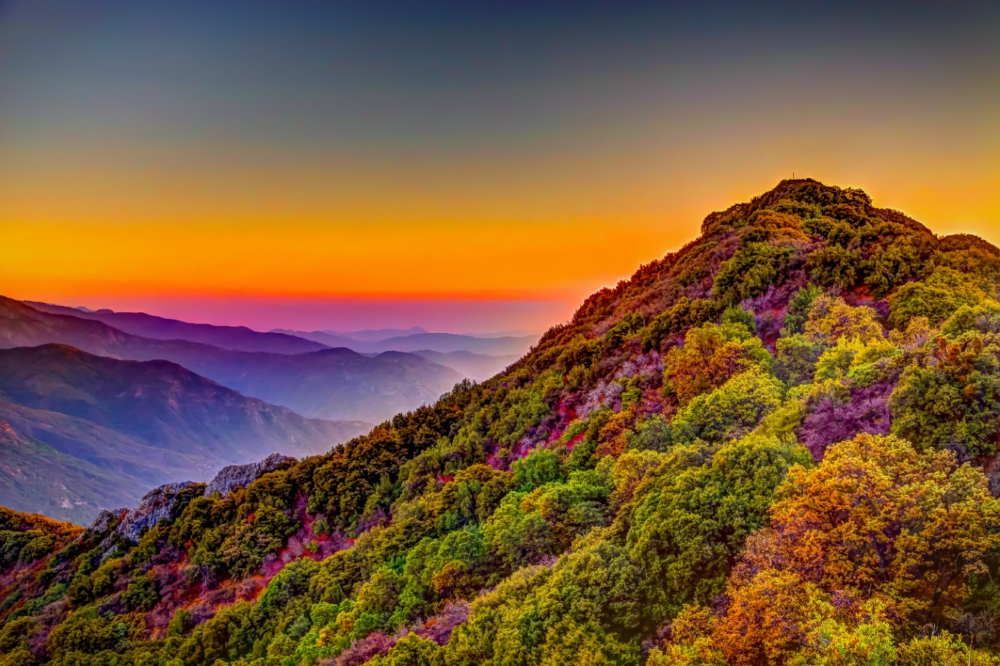

Photography: Capturing Moments, Creating Memories
Photography is the art of freezing moments in time, capturing the beauty and essence of the world around us with a single click. It's a visual language that transcends words, enabling us to convey emotions, tell stories, and preserve memories. Through the lens of a camera, photographers become storytellers, framing the world through their unique perspectives. Whether it's the play of light and shadow, the candid expressions of people, or the breathtaking landscapes of nature, photography has the power to evoke powerful emotions, inspire curiosity, and foster a deeper appreciation for the wonders of our world. It's a medium that invites us to see the extraordinary in the ordinary, to celebrate the fleeting, and to leave a lasting imprint of our experiences for generations to come.